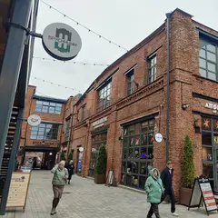

Крафтовый бар · Васильевский остров
OnTap
Крафтовый бар в «Севкабель Порту» с длинным списком кранов — удобно зайти после прогулки по набережной у залива.
- ₽ · до 1 500 ₽ на человека
- Новое в каталоге
- в 3 планах
Позвать сюда: OnTapОткрыть в каталоге: OnTapМаршрут до места: OnTap
Адрес и детали
- Адрес
- Кожевенная линия, 34
Открыть на Яндекс Картах (в новой вкладке) - Метро
- м. Горный институт
- Район
- Васильевский остров
- Цена
- до 1 500 ₽ на человека
- Проверено
- работает — проверили в октябре 2026
Планы с этим местом 3
- Mntn coffee · Кофейня · м. Горный институт
- 2 минуты пешкомСевкабель Порт · Креативное пространство
- 4 минуты пешкомOnTap · Крафтовый бар
Латте с собой, закат у залива в бывшем кабельном заводе, а когда стемнеет — бар с длинным списком кранов прямо в порту.
Открыть план: Закат на Севкабеле и крафтПозвать сюда: Закат на Севкабеле и крафт
- Падел-клуб «Ракета» · Падел-клуб · м. Горный институт
- 4 минуты пешкомOnTap · Крафтовый бар
Корты для падела в Брусницыне — игра проще тенниса, — а потом 4 минуты пешком — крафтовый бар в Севкабель Порту.
Открыть план: Падел и крафт у заливаПозвать сюда: Падел и крафт у залива
- RAKETKA · Пинг-понг клуб · м. Горный институт
- 4 минуты пешкомOnTap · Крафтовый бар
Счёт и видеоповторы на планшете у стола, а после — длинный список кранов в баре в Севкабель Порту.
Открыть план: Умный пинг-понг и пивоПозвать сюда: Умный пинг-понг и пиво
Входит в подборки
Похожие рядом

Что ещё рядом
- РитмыКлуб-бар · ≈ 1 минута пешком
- RAKETKAПинг-понг клуб · ≈ 4 минуты пешком
- Севкабель ПортКреативное пространство · ≈ 4 минуты пешком
- Падел-клуб «Ракета»Падел-клуб · ≈ 4 минуты пешком

Культурный квартал «Брусницын»Креативное пространство · ≈ 5 минут пешком- Стрит-арт хранениеГалерея · ≈ 6 минут пешком
Как позвать
- Выбери план, место или событие — в карточке адрес, цены и маршрут в Яндекс Картах.
- Нажми «Позвать сюда» — соберётся приглашение-игра для свидания или голосование для компании.
- Отправь ссылку в любой мессенджер: тебе ответят, а компания отметит, куда и когда может. Бесплатно и без регистрации.